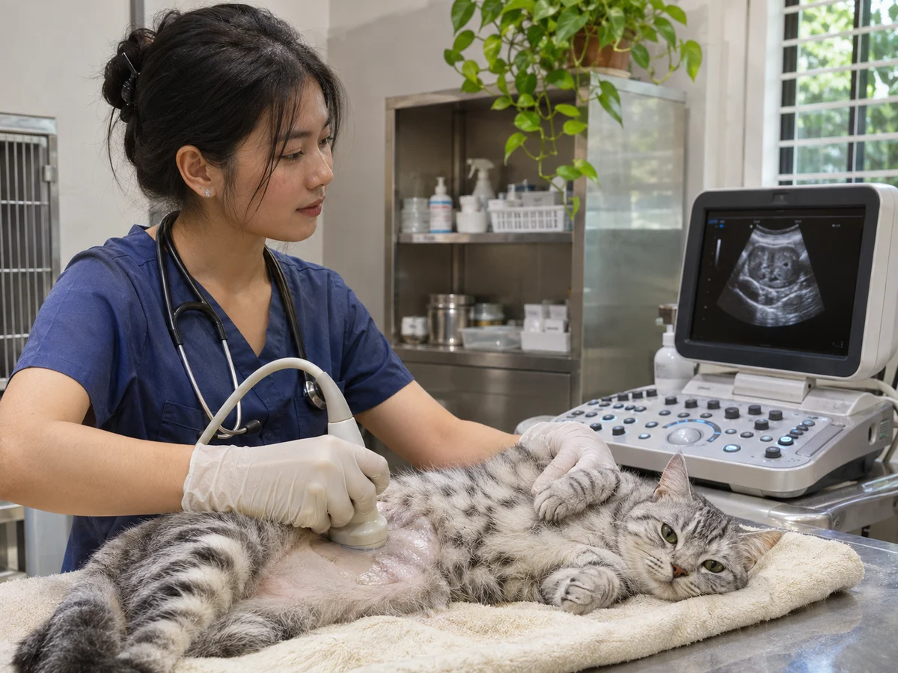
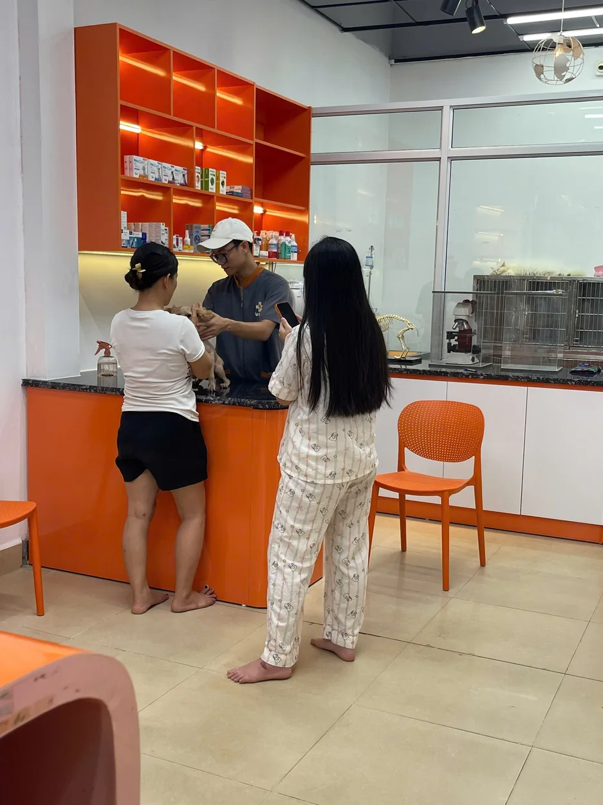
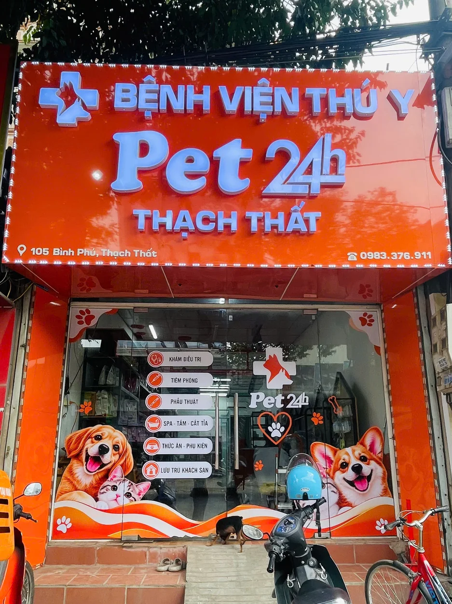

Tắm chó mèo
39.000đ
Tắm và làm sạch lông cho bé. Bạn có thể hỏi thêm về cắt tỉa nếu muốn làm cùng buổi.
Ưu đãi tại Pet24h Thạch Thất
Chọn dịch vụ phù hợp rồi nhắn Zalo để hỏi điều kiện và hẹn giờ đến.
39.000đ
Tắm và làm sạch lông cho bé. Bạn có thể hỏi thêm về cắt tỉa nếu muốn làm cùng buổi.
Miễn phí
Kiểm tra da và tai nếu bạn thấy bé hay gãi, rụng lông hoặc có dấu hiệu bất thường ở tai.
399.000đ
Gói kiểm tra sức khỏe tổng quát cho chó mèo. Nhắn Zalo để Pet24h xác nhận các hạng mục trong gói trước khi đặt lịch.
Khi liên hệ, bạn có thể mô tả dấu hiệu và thời điểm bắt đầu để bác sĩ nắm tình trạng ban đầu.
Bác sĩ kết hợp khám lâm sàng với các kiểm tra khi cần, như xét nghiệm máu nhanh, test Parvo/Care, siêu âm, soi da, soi tai và kiểm tra ký sinh trùng. Pet24h có máy xét nghiệm sinh lý, sinh hóa, máy siêu âm và kính hiển vi.
Pet24h tiếp nhận các bệnh về tiêu hóa, hô hấp, gan và thận, đồng thời chăm sóc tại viện cho các ca cần theo dõi.
Bác sĩ thực hiện triệt sản, phẫu thuật mô mềm và phẫu thuật xương theo chỉ định.
Pet24h lưu hồ sơ sức khỏe điện tử và tự động nhắc lịch tiêm.
Bạn có thể đặt lịch tắm, vệ sinh hoặc cắt tỉa tạo kiểu cho bé.

Nếu bé khó thở, đang co giật, bụng chướng đột ngột, gặp tai nạn nghiêm trọng hoặc mèo rặn tiểu mà không ra nước tiểu, hãy tìm cơ sở cấp cứu thú y ngay.
Pet24h tiếp nhận ca cấp cứu, gồm cả ngộ độc, với máy theo dõi, máy truyền dịch và thiết bị hỗ trợ oxy. Gọi để báo tình trạng và xác nhận khả năng tiếp nhận.

Bác sĩ dựa trên kết quả thăm khám và xét nghiệm khi cần để chọn hướng điều trị phù hợp.
Bác sĩ giải thích phác đồ và các khoản chi phí dự kiến để bạn quyết định.
Pet24h cập nhật tình trạng trong lúc điều trị, hướng dẫn chăm sóc, gọi điện hỏi thăm và hẹn tái khám khi cần.
Đặt lịch qua Zalo, gọi hotline hoặc đến trực tiếp.
Bác sĩ thăm khám và chỉ định kiểm tra khi cần.
Trao đổi hướng điều trị và dự toán chi phí.
Điều trị, hướng dẫn chăm sóc và theo dõi sau điều trị.

Nhắn Zalo để chọn ưu đãi hoặc đặt lịch khám. Cho Pet24h biết bé là chó hay mèo, dịch vụ bạn cần hoặc triệu chứng đang gặp và giờ dự kiến đến.
Bệnh viện thú y Pet24h Thạch Thất